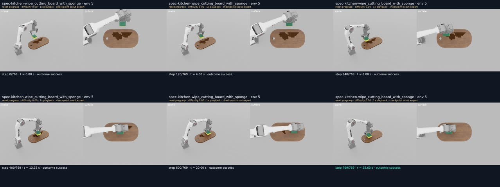
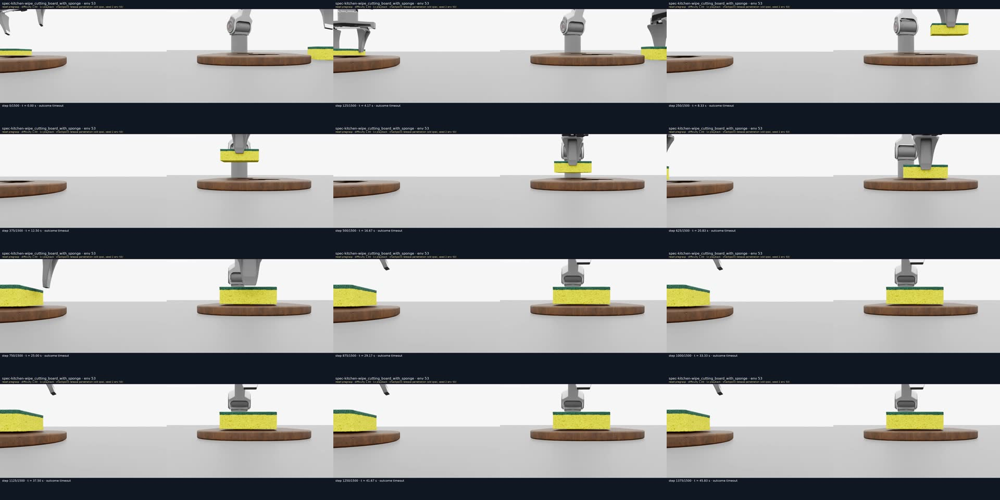

海绵擦砧板：建库现状与完整任务视频
对应 a2r issue #242（E-10 专家修复：海绵擦砧板，松手穿板复现，等待共享 Release 决策）。2026-11-24 整理，仓库基线 main d134c7aef。
1. 任务是什么
单臂 Piper X 从桌面抓起海绵，压在砧板上来回擦，把砧板表面的污渍格擦掉，最后松手、抬手离开。成功判定看三项：污渍擦除比例、海绵已松开、物体静止。专家按规格里的原语依次执行：
approach 接近 → descend 下探 → close 闭爪 → lift 抬起 → object_move 持物搬到砧板 → surface_wipe 按栅格压着擦 → release 张手 → tcp_move 抬手离开。

冻结原版专家第 5 号回合的关键帧，依次为第 0、120、240、400、600、769 步（30 Hz）。左为场景视角，右为砧板俯视图，深色格是未擦净的污渍。
2. 现行起点库
| 项 | 值 |
|---|
| 路径 | Shiki42/a2r-e10-reset-banks@3a9f3f79 : all-stages-20261104/wipe_cutting_board_with_sponge/filter-1 |
| 来源 | configs/reset_banks/latest.yaml（每题唯一现行库） |
| 建库 | 节点 d，Isaac 5.1，物理 d6，代码 9f9a0347，Run R315（2026-11-03 用户接受污渍设计后重建） |
| 采样方案 | v1（按阶段配额；manifest 无 reset_scheme 字段） |
| 各类条数 | pregrasp 3000 · p25 1000 · p50 864 · p75 923 |
| 规格验收（status） | 宽范围 301/312 有效起点成功；建库冒烟 40 条无缺类；verdict = review |
| v2 重建 | R368 已登记（v2 全量重建 T1–T11 计划），状态 planned，尚未开始 |
| 策略训练 | 尚无。展示页记录 Coder B 的 Isaac 6.0.1 跑不了这题 |
已有的视频（2026-11-07，与现行库对应）
起点库渲染：pregrasp / p25 / p50 / p75 四类起点叠影（d，Isaac 5.1，seed 31001）。HF demos 50922584
RL 输入点云：海绵 96、砧板 128、两指各 16、污渍 64，共 320 点。HF demos 2fd03e02
HF 上还有 2026-10-27 的 scout 专家视频，但那是改成“擦污渍”前的旧定义（物理、初始化、成功条件都已变），不代表现行专家，所以这里不再引用。
3. 新录：现行专家的完整任务（2026-11-24）
在节点 f 上用 tasks validate --steps videos 跑 scout，物理 d7，seed 853，每版 8 个环境，从规格起点（pregrasp）一直到松手离开。两版专家：
- 冻结原版
d767eb0e：这题的专家、规格与当前 main 行为一致（main 只多了 status 注释）。
- 空手提速版
70cb26af1（PR #203 分支上的候选）：空手远段提速、轴向前视 8 mm，issue 里自然 Home 成功率 261→303/311 的那一版。
| env | 冻结原版 步数 | 提速版 步数 | 结局 |
|---|
| 0 | 551 | 504 | 均成功 |
| 1 | – | – | 起点被筛掉（两版都无效） |
| 2 | 683 | 628 | 均成功 |
| 3 | 637 | 590 | 均成功 |
| 4 | 617 | 632 | 均成功 |
| 5 | 769 | 731 | 均成功 |
| 6 | 734 | 663 | 均成功 |
| 7 | 562 | 510 | 均成功 |
| 合计 | 7/7 成功，平均 650 步（21.7 s） | 7/7 成功，平均 608 步（20.3 s） | |
|---|
这 8 个起点上两版都没出现松手穿板。该失败在宽范围里大约只占 1%（307 个有效起点中 2–3 个），8 段视频碰不到很正常。起点是 pregrasp，提速版对空手远段的加速在这里体现得不多；从自然 Home 出发时差别更大（见第 4 节）。
同一起点 env 5 并排：左冻结原版 769 步，右提速版 731 步（结束后定格 5 s）
冻结原版 env 5，769 步，成功
冻结原版 env 0，551 步，成功
提速版 env 0，504 步，成功
提速版 env 5，731 步，成功
这里只放了压缩后的 5 段（640 宽，crf 30）。16 段 1280×720 原件，以及两版的 validate.md 和 result.json，留在 f：bozhao@100.127.75.5:~/sponge-video-20261124/{frozen195,sponge-70cb26af1}/videos/full/。
松手穿板的回合（横向机位）
旧规格（带松手，父提交 bd9300a20），a 上 scout 种子 2、宽范围难度、第 53 号环境。回合在擦净后进入松手，穿板否决把擦拭结果作废（终态 wiped=否、released=是），之后停在抬手离开，50 s 超时。两个机位都几乎贴着砧板上表面平视：左边从侧面（−y）看，右边沿砧板长边从 +x 往回看。全程 1×，1500 步，请自行快进到擦完松手的那一段。
松手穿板，env 53，2560×960，左右两个横向机位

每 125 步抽一帧
4. Issue #242 目前进度
开发种子 853/854，物理 d7，900 步上限，每个种子 192 个提案。
| 版本 | 自然 Home（共同可行 311） | 宽范围（共同有效 307） |
|---|
冻结原版 d767eb0e | 261（83.9%），p95 ∞ | 304 |
空手提速 70cb26af1 | 303（97.4%），p95 847 步 | 303（挽回 2，损失 3） |
实宽预松 8cfa4ab07 | 未测 | 303（相对父版挽回 853:25、72，新增损失 853:34、854:69） |
卡在哪里
海绵已经擦净（140/140、147/147 格），但共享 Release 原语一张手，到全张开的第一帧（指间距 78.5 mm），海绵一角就压进砧板 3.0–3.3 mm，越过 −3 mm 穿板否决线；之后回合在 TcpMove 超时。慢开爪、擦完先抬 5 mm、按海绵实宽预松都试过：前两个失败摆位修好了，又在另外两个摆位上出现同样的问题。
判断：边界在冻结的共享 Release 原语，单题专家参数已经调不动，PR #203 保持草稿。是否让 Release 按接触力反馈逐步卸载，由主管在 29 题建库结束后决定（O-375）。如获批，先用 853:25、72、34 和 854:69 四个穿板摆位核对松手时的夹宽、海绵相对板面的运动和接触力，再做全量宽范围、防退化检查和独立 Home 验收。
证据入口
- 最终记录 O-375：2c495e78；Home 与宽范围配对 O-373：3fb6538c；逐帧几何：3e5ffe3d
- 原件：f
~/e10-expert-c88887/sponge641/，冻结对照在 inputs853/baseline/wide，两版候选在 out/sponge-70cb26af1-seed853、out/sponge-8cfa4ab07-wide853
- PR #203：分支
e10/sponge-home-review（草稿）；实宽版分支 e10/sponge-unload-at-width